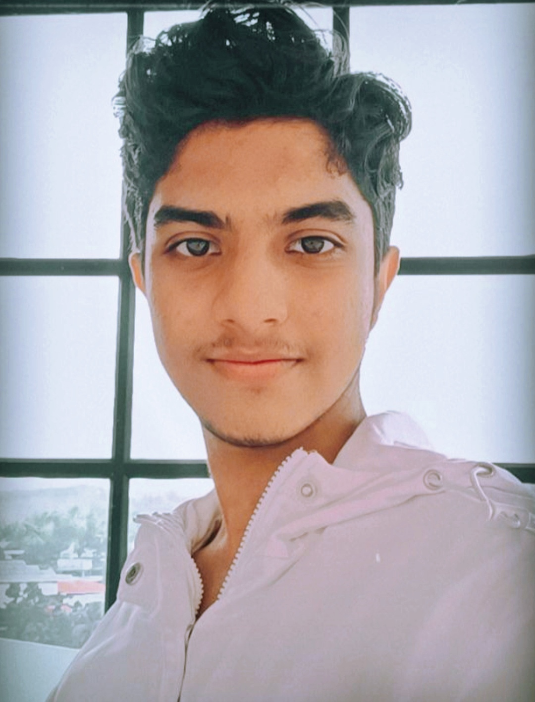

HELLO! I'M SOORYAJITH
Aspiring Data Scientist
Well, I am a Bachelor of Data Science student at SP Jain School of Global Management, Sydney, with a passion in writing. I am hailing from Kerala, India. I am very talkative and friendly in nature. I focus on making things around me better and always want to create some impact where I work. My happiness is making people around me happier. I like to keep on learning new things. Currently I am also doing Full Stack Web Development Intership with Edureka to learn and gain experience with Web Development. I studied in a boarding school where I have faced and conquered lots of struggles in my childhood itself. So I will be able to manage all kind of situations and grown up to be a self-reliant person. I am actively involved in many extra-curricular activities. I am the Vice-President of the Socials' Club of my campus and Event Executive of EcoyouthSPJ club. I like my life to be adventurous. For me my professional achievements are not my ultimate dream. I insist on using my profession for fulfilling many of my dreams and contribute for the betterment of the world which is my goal. My life philosophy is simple. "Nothing comes in life for free. Everything has to be paid for."